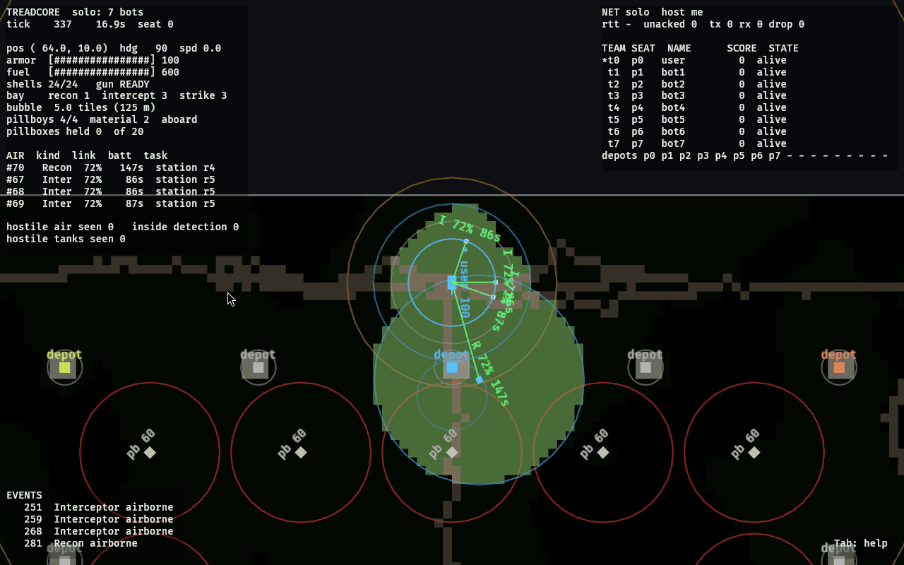
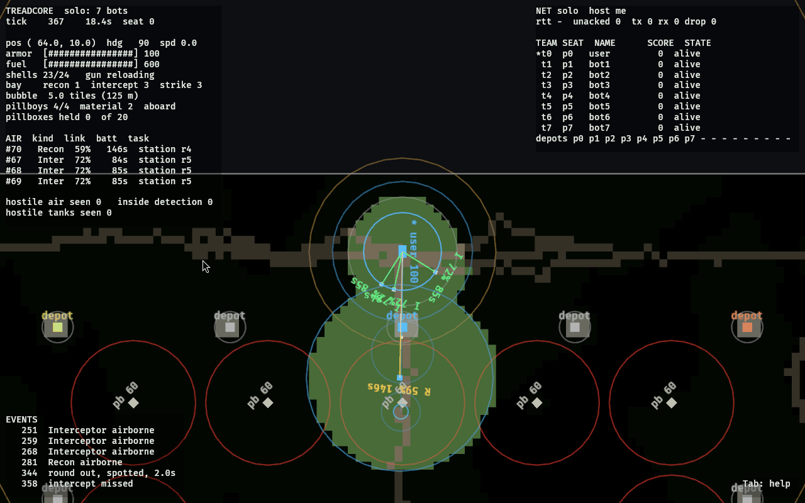
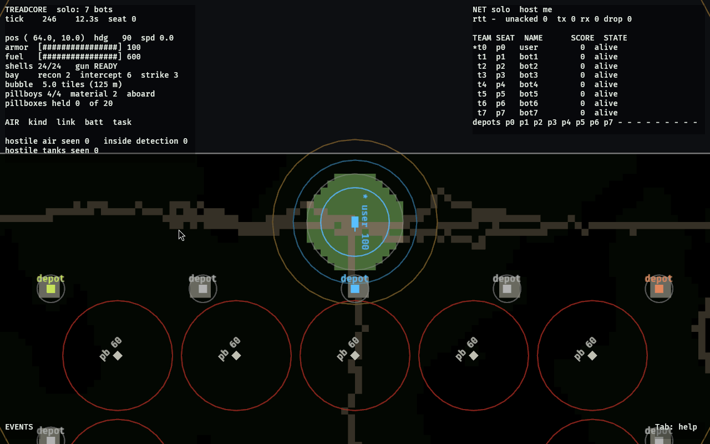
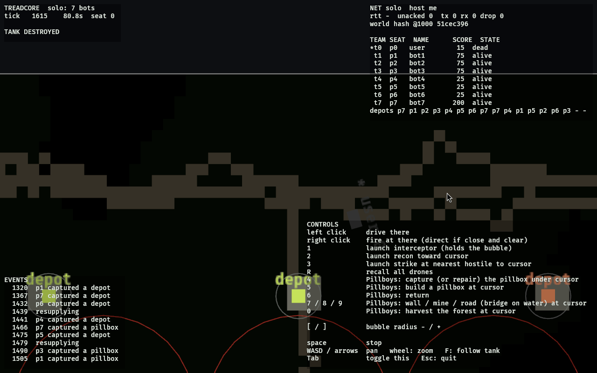
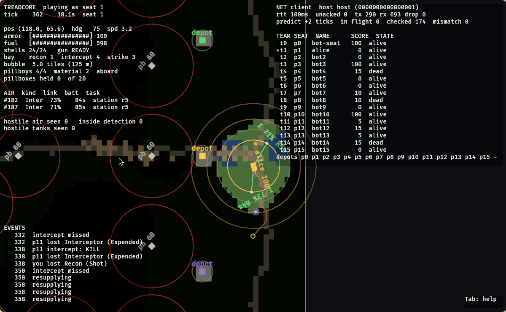
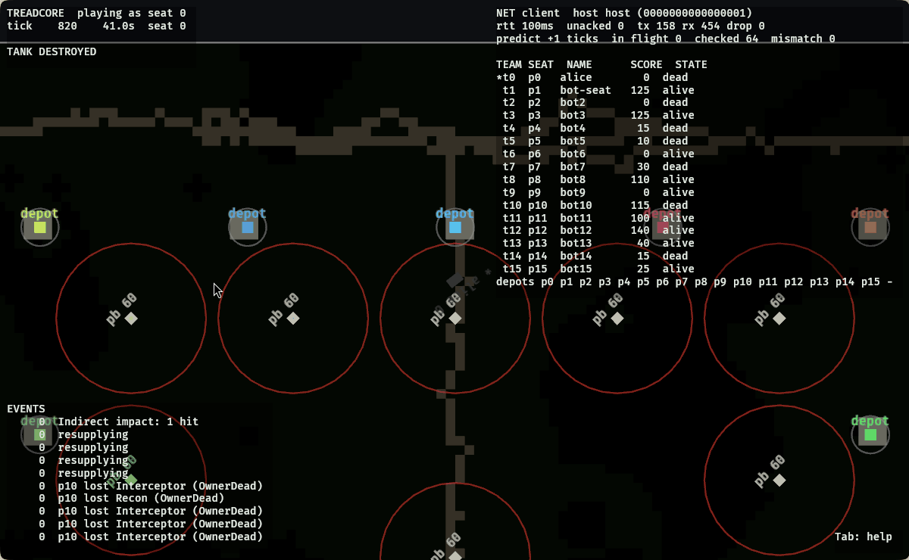

Treadcore
sixteen tanks · one island · the airspace around each one
A sixteen-player overhead tank game for the battlefield the tank was just handed. The gun fires indirect, like artillery, at map coordinates a recon drone is watching. The tank stays alive the way a carrier does: by owning a ring of airspace around itself with interceptor drones flown off its own hull. A shell comes down through that ring regardless. That is the game.
The tank is the mobile command. Everything it deploys, it deploys from itself.
git clone git@github.com:treadcore/treadcore.git cd treadcore make configure make run # solo against fifteen bots make lan # LAN lobby, elects a host make debug # a full bot match, traced to build/logs/
In play
The first playtest build, 13 October 2026: a human seat among fifteen bots, and three clients that met through the introducer with no server anybody set up. Every frame is the game drawing rectangles and lines on a CPU rasteriser in a virtual machine; there is no art to buy, only a battlefield to read. The full account, with what broke and what it measured, is the playtest lab report.








The drone crew
| drone | job | the number that matters |
|---|---|---|
| recon | orbits a point, sees 12 tiles, feeds the gun | a spotted shell lands within 0.6 tiles; blind, within 4 |
| interceptor | holds station on the bubble, rams what flies in | 90% kill on a good link, 50% on a dead one; one shot each |
| strike | the FPV: flies to an enemy tank and dives | 35 of 100 armor, if it gets through |
The HUD
On the map: the bubble as a ring, every link as a line from tank to drone going green to red with distance, the recon's vision as a disc over the enemy, every shell as an arc with its impact point growing as it falls.
No server
Each process beacons the LAN, pings every peer it finds, publishes a row of the latency matrix, and runs the same election on the same matrix: the host is the peer whose worst link to anyone is best, and anyone the host cannot reach directly sends through the neighbour that can. The prior art's ring, as a tree. The protocol.
Brains
A Brain gets the same observation the window draws and returns commands the world validates like anyone else's. A bot in Python is a program that reads one JSON line and writes one. The interface.
Repository
| directory | holds |
|---|---|
| source/ | the six Rust crates: sim, proto, net, brain, server, client |
| documentation/ | concept, design, protocol, research with sources, the lab report |
| vendor/ | external code and blobs vendored by the author, each with its licence |
| scripts/ | what the Makefile calls |
Reports
Opening day, 12 October 2026: the vision, the research, what was built, what was learned, where it goes next.
The first playtest build, 13 October 2026: the window on a CPU rasteriser, a solo match and a three-client match through the introducer, the multiclient explained end to end, nine findings.
Read more
Concept · Design · Protocol · What it is modelled on · Lab report · Pillboys and the prior art · the prior art spec · Maps · Roadmap · Releases · Governance · Source